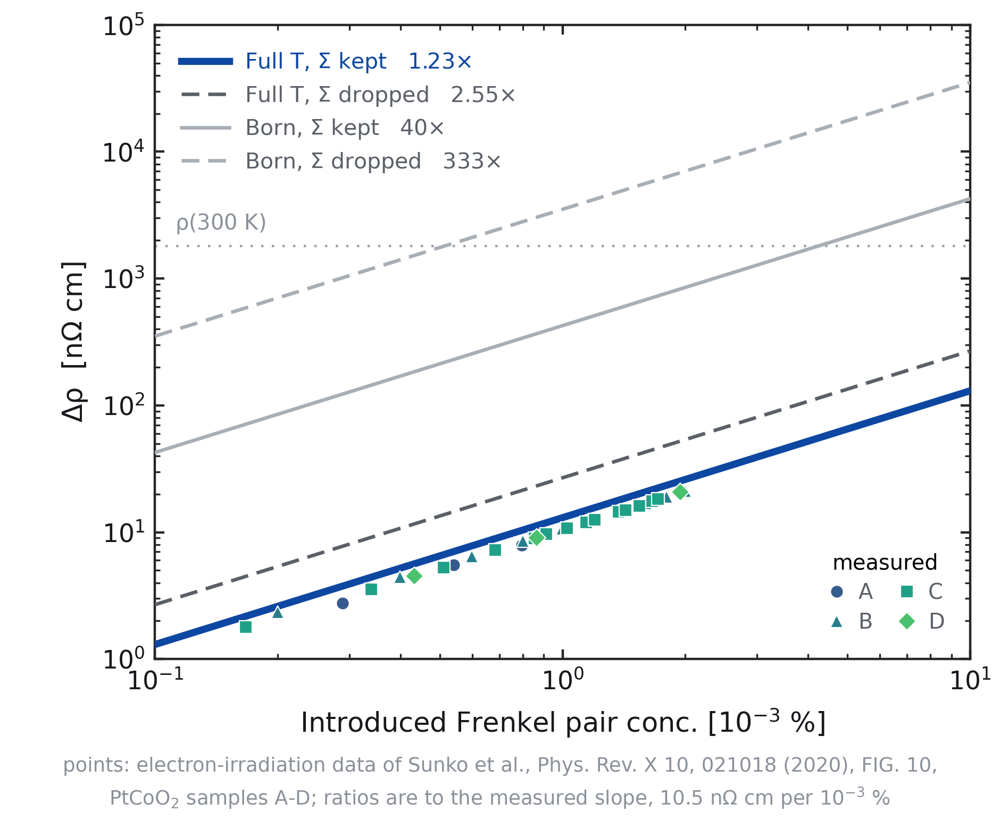

Contents
The discriminating question. For PdCoO$_2$, the full-order $T$-matrix / IBTE chain gives a Frenkel-pair residual-resistivity slope 2.05× the electron-irradiation measurement. If PtCoO$_2$ lands on the same multiple, that factor of 2 is a method systematic; if it does not, it is material-dependent. The two readings point future work in completely different directions, which is why the whole chain was worth re-running.
Answer: not consistent — 1.235×. The factor of 2 is material-dependent, and PtCoO$_2$ actually agrees with experiment better. More importantly, this page identifies the mechanism: the difference comes mostly from the rest-space self-energy $\Sigma$.
Working root
~/ptcoo2_edt/(Banff); all compute on Anvil highmem. Every number and all 21 gates are inRESULTS.md(1606 lines); 19 corrections to the source pipeline document are inPIPELINE_ERRATA.md.
1. Result
The two materials' measured slopes are nearly identical, so the entire difference sits in the theory:
| theory $\mathrm{d}\rho/\mathrm{d}c$ (Frenkel pair) | measured | ratio | |
|---|---|---|---|
| PtCoO$_2$ (this page) | 13021 nΩ·cm/% | 10546 nΩ·cm/% (30 points) | 1.235× |
| PdCoO$_2$ (same method, same parameters) | 21849–21953 | 10654 (22 points) | 2.05–2.06× |
Measured slopes are from the electron-irradiation data of Sunko et al., Phys. Rev. X 10, 021018 (2020), FIG. 10, fitted through the origin. All four experimental benchmarks were recomputed from the digitised data and reproduce to better than $4\times10^{-5}$:
| material | points | recomputed | previously quoted | deviation |
|---|---|---|---|---|
| PtCoO$_2$ (samples A+B+C+D) | 30 | 10546.23 | 10546 | $+0.002\%$ |
| PdCoO$_2$ (A+B) | 22 | 10654.19 | 10654 | $+0.002\%$ |
| PdCrO$_2$ (A) | 8 | 10963.57 | 10964 | $-0.004\%$ |
| unitary limit | — | 9750.21 | 9750 | — |

Left: linear axes, with the PtCoO$_2$ A–D scatter and all four theory levels. Right: log–log, including the $\rho(300\,\mathrm{K})$ reference line and the PdCoO$_2$ comparison. The solid black line ("this work, full T-matrix") sits about 24% above the data points, consistent with 1.235×.
2. Structure: a fork that had to be settled first
The literature $c$ axis for PtCoO$_2$ is not unique, and this choice decides the Fermi-surface topology. Three independent lines of evidence select the same parameters:
- Same refinement. Prewitt / Shannon / Rogers (1971) is the very paper the PdCoO$_2$ chain used. Taking both structures from one source removes a cross-reference systematic.
- Ionic-size self-consistency. The delafossite A site is linearly O–A–O coordinated, so $r(\mathrm{Pt^{I}})>r(\mathrm{Pd^{I}})$ demands $c(\mathrm{Pt})>c(\mathrm{Pd})$ — only the pair $17.743/17.808$ satisfies this. The competing value $c(\mathrm{PdCoO_2})=17.837$ reverses the inequality.
- Fermi-surface topology (decisive). Both alternatives were run as explicit sensitivity calculations: $c=17.837$ and $z=0.1105945$ each produce two bands crossing $E_F$, while the main line produces one. PtCoO$_2$ is experimentally a single-band metal (a single dHvA frequency; Arnold et al. report "a single band crossing the Fermi energy"), so the main line is the only choice compatible with experiment.
The rhombohedral primitive cell uses QE ibrav=5, converted from the hexagonal parameters by
In this basis $\mathbf a_1+\mathbf a_2+\mathbf a_3=(0,0,c_{\rm hex})$, so the oxygen crystal coordinate $z$ is the hexagonal 6c $z$ parameter — no conversion, one fewer place to slip.
3. Host chain and gates
| stage | content | gate / product |
|---|---|---|
| S1 | primitive SCF / relax / bands + $6^3$ nosym NSCF | manifold isolation (hard gate) |
| S3 | 16 MLWF, no disentanglement | total spread, centre offsets |
| S4–S5 | $3\times3\times3$ supercell (pristine / vacancy / interstitial) + relaxation | symmetry orbit closure |
| S6 | $\Delta V$ cubes + alignment | two-method agreement |
| S7 | EDT stage B (born) → edmat | unpaired |
| S8 | EDT stage C (MODE C global block-Lanczos chain) | hermiticity, operator unit test |
| S9–S10 | SERTA + IBTE transport, four theory levels | gate0, optical theorem, null mode |
| S11 | convergence tables + structure sensitivity | 9 axes / 37 points |
Settings: SG15 ONCV pseudopotentials, plain PBE (no $+U$, matching the PdCoO$_2$ treatment), ecutwfc = 90 Ry / ecutrho = 360 Ry, $6^3$ nosym NSCF, 16 MLWF, $3\times3\times3$ supercell, RCUT 14 Å, $G_0$ mesh $240^3$, $\eta$ = 10 meV, Fermi surface $144^2\times18$, n_lancz = 24, svd_tol = $10^{-4}$, symm_mode='sectors'.
S1 hard gate: the manifold must be isolated
Both the sectors mode and "16 MLWF without disentanglement" require the d+p manifold to be separated from what lies above it. If it closes, that is a design change (disentanglement must be added, the active-space definition redone), not a parameter tweak. Measured:
Gate passes, though the gap is 4.1× narrower than PdCoO$_2$'s 0.9451 eV. The manifold is bands 11–26 (with a 9.92 eV gap below it), and exclude_bands = 1-10,27-40 removes exactly $n_{\rm bnd}-n_{\rm wann}=40-16=24$ bands. The active-space window $[0,\,19.2]$ eV brackets bands 11–26 precisely while leaving band 27 outside.
A check independent of this calculation
The host chain (SCF → NSCF → Wannier) can be validated against a quantity that needs no calculation at all: the 16-band delafossite manifold holds 27 electrons, i.e. 13.5 bands below $E_F$. Counting occupancy on a $24^3$ Wannier mesh:
The same probe gives a mean Fermi radius of 0.9081 Å$^{-1}$ against the dHvA $k_{00}=0.9581$ Å$^{-1}$, i.e. 5% small — the known plain-PBE deficit (Arnold et al. need GGA+U to match the dHvA frequency). Note that the $k_z=0$ contour radius must not be compared to $k_{00}$ directly: $k_{00}$ is the zeroth cylindrical harmonic, i.e. the mean radius, and $c$-axis warping makes the $k_z=0$ cross-section about 8% smaller.
4. The four theory levels
Full-order $T$-matrix versus Born (Fermi golden rule), each with the rest-space self-energy $\Sigma$ kept or dropped. $\mathrm{d}\rho/\mathrm{d}c$ in nΩ·cm per % defect.
| level | configuration | SERTA $xx$ | SERTA $yy$ | IBTE $xx$ | IBTE $yy$ | IBTE mean | $\div 10546$ |
|---|---|---|---|---|---|---|---|
| Full $T$, $\Sigma$ kept | vacancy | 6303.7 | 6288.5 | 4358.7 | 4343.0 | 4351 | 0.41× |
| Full $T$, $\Sigma$ kept | interstitial | 10897.9 | 11032.1 | 8795.6 | 8545.3 | 8670 | 0.82× |
| Full $T$, $\Sigma$ kept | Frenkel pair | 17201.6 | 17320.6 | 13154.3 | 12888.3 | 13021 | 1.235× |
| Full $T$, $\Sigma$ dropped | vacancy | 23036.4 | — | 10362.6 | — | 10363 | 0.98× |
| Full $T$, $\Sigma$ dropped | interstitial | 33081.4 | — | 16490.6 | — | 16491 | 1.56× |
| Full $T$, $\Sigma$ dropped | Frenkel pair | 56117.8 | — | 26853.2 | — | 26853 | 2.55× |
| Born, $\Sigma$ kept | vacancy | 397767.4 | 398257.3 | 368293.3 | 368733.9 | 368514 | 34.9× |
| Born, $\Sigma$ kept | interstitial | 47222.7 | 47123.4 | 57096.7 | 56528.4 | 56813 | 5.39× |
| Born, $\Sigma$ kept | Frenkel pair | 444990.1 | 445380.7 | 425390.0 | 425262.3 | 425326 | 40.3× |
| Born, $\Sigma$ dropped | vacancy | 3532159.7 | 3536923.3 | 3314278.8 | 3318906.6 | 3316593 | 314× |
| Born, $\Sigma$ dropped | interstitial | 416709.4 | 419404.8 | 196974.6 | 198815.4 | 197895 | 18.8× |
| Born, $\Sigma$ dropped | Frenkel pair | 3948869.1 | 3956328.1 | 3511253.4 | 3517722.0 | 3514488 | 333× |
The predicted ordering reversal shows up
The source pipeline document explicitly asks for this check (and says to go back and look if it fails): at full order the interstitial scatters 2.0× more strongly than the vacancy, while at Born level the vacancy is 6.5× stronger. Born gets the relative importance of the two defect types backwards — which is the whole point of going beyond it.
The two arms have different kernel quality
Diagnostics at production settings. Here asym $=\lVert P-P^{\mathsf T}\rVert/\max P$ is the scattering-kernel asymmetry, lamnull is the projected-out null-mode eigenvalue, and $s$ is the optical-theorem normalisation factor:
asym | lamnull | $s$ | prodLU → fixed | |
|---|---|---|---|---|
| vacancy | $8.13\times10^{-2}$ | $1.36\times10^{-8}$ | 0.9254 | 4041.7 → 4041.6 ($0.01\%$) |
| interstitial | $4.08\times10^{-1}$ | $3.18\times10^{-5}$ | 0.9069 | 8335.5 → 8033.5 ($-3.6\%$) |
Three concordant measures say the interstitial kernel is genuinely dirtier: 5× the asymmetry, 2340× the null-mode eigenvalue, and the symmetrisation + null-projection step moves it by 3.6% (against 0.01% for the vacancy). This is not a numerical error — PdCoO$_2$'s interstitial arm also has asym 0.34–0.40 and its production value is still used, and the symmetrisation / null-projection / optical-theorem machinery exists precisely for this. But it is the direct reason the interstitial convergence curves are noisier than the vacancy's.
5. Matched cross-material comparison — and the mechanism
The PdCoO$_2$ archive turned out to contain both arms at exactly the same production settings ($N=240$, RCUT 14 Å, $\eta$ = 10 meV, FS $144^2\times18$), so the two materials can be compared term by term without going through the measured slopes as an intermediary.
A. Clean comparison (both materials at $N=240$)
| PtCoO$_2$ | PdCoO$_2$ | Pt/Pd | |
|---|---|---|---|
| vacancy | 4351 | 7618 | 0.571 |
| interstitial | 8670 | 14335 | 0.605 |
| Frenkel pair | 13021 | 21953 | 0.593 |
| vs own measured | 1.235× | 2.061× | ratio of ratios 0.599 |
The two arms independently give the same ratio (0.571 and 0.605). This is a material-level effect, not an accident of one defect configuration — had the problem been the interstitial site choice or the relaxation path, the two arms would not move together.
B. A second, independent mesh ($N=160$)
The $G_0$ axis is non-monotonic (§6), so one point is not enough. PdCoO$_2$'s $N=160$ values are at settings that match the PtCoO$_2$ $G_0$-axis $N=160$ row exactly, so the comparison can be redone there:
| mesh | PtCoO$_2$ | PdCoO$_2$ | ratio of ratios |
|---|---|---|---|
| $N=160$ | 1.254× | 1.893× | 0.662 |
| $N=240$ | 1.235× | 2.061× | 0.599 |
| spread across meshes | 1.5% | 8.8% | — |
The two materials' intervals do not overlap (Pt 1.235–1.254 against Pd 1.893–2.061), and the PtCoO$_2$ value is remarkably stable. So the conclusion does not depend on whether $G_0$ is fully converged — only on both materials using the same mesh.
C. Mechanism: the difference is mostly rest-space self-energy
Comparing $\Sigma$'s leverage within a single mesh ($\Sigma$ dropped ÷ $\Sigma$ kept):
| $\Sigma$ dropped / kept | rest space above $E_F$ | |
|---|---|---|
| PdCoO$_2$ (both $N=240$) | 12471 / 7618 = 1.64 | 3.311 eV |
| PtCoO$_2$ (both $N=160$) | 10363 / 4199 = 2.47 | 2.425 eV (27% closer) |
Reading A and C together:
That is, the two materials differ by only ~15% in bare scattering strength, but by 41% once $\Sigma$ is kept. The bulk of the material difference comes from the rest-space downfolding term, and that term is stronger in PtCoO$_2$ because Pt's 5d/6s leave the rest space 27% closer to $E_F$ ($2.425$ vs $3.311$ eV).
(The $\Sigma$-dropped cell is mesh-mismatched and flagged as such: PtCoO$_2$'s $\Sigma$-dropped runs exist only at $N=160$ — the Born convention, matching PdCoO$_2$'s Born rows. Rescaling PtCoO$_2$ by the measured $N{=}160\to240$ shift of $\times1.037$ gives 0.865; whether 0.834 or 0.865, it is clearly above the $\Sigma$-kept 0.593.)
This prediction was made early in the chain — the moment S1 measured where band 27 sits, the note read "the $\Sigma$ renormalisation should matter more in PtCoO$_2$" — and it was subsequently confirmed four independent ways: the $\Sigma$ leverage 2.47 vs 1.64, the Born÷Full ratio 84.7× vs 61.0×, and the cross-material comparison in this section.
6. Convergence tables (9 axes / 37 points)
Two arms × five axes ($G_0$ / $\eta$ / FS / RCUT / n_lancz). Every axis contains its own production point, so every axis doubles as a determinism check: 18/18 (9 axes × SERTA/IBTE) are byte-identical to the production run, 0 mismatches — and the convergence runs used a different job script from the production one.
$\eta$ (Lorentzian broadening)
| $\eta$ (meV) | vacancy vs prod | interstitial vs prod |
|---|---|---|
| 5 | $-2.21\%$ | $-1.76\%$ |
| 10 (production) | — | — |
| 25 | $+8.04\%$ | $+4.48\%$ |
| 50 | $+19.58\%$ | $+7.92\%$ |
Both arms increase monotonically with $\eta$, as expected physically: a finite broadening artificially relaxes energy conservation and opens extra scattering channels. Linear $\eta\to0$ extrapolation gives $-4.42\%$ (vacancy) and $-3.52\%$ (interstitial), i.e. a Frenkel pair of 12524 or 1.188×. Since PdCoO$_2$'s production also used $\eta$ = 10 meV, this systematic largely cancels in the ratio.
n_lancz: the most counter-intuitive result here
The vacancy arm is within 0.42% at n_lancz = 12, while the interstitial arm is off by 97% at the same truncation:
n_lancz | vacancy vs prod | interstitial vs prod |
|---|---|---|
| 8 | $+2.85\%$ | $+44.85\%$ |
| 12 | $+0.42\%$ | $\mathbf{+97.31\%}$ |
| 16 | $+0.09\%$ | $+7.15\%$ |
| 20 | $+0.03\%$ | $+0.76\%$ |
| 24 (production) | — | — |
An early inference from "PtCoO$_2$'s rest space is closer" was that the chain might need more steps. That was disproved on the vacancy arm and confirmed on the interstitial arm — physically consistent, since the interstitial kernel's asym = 0.41 is 5× the vacancy's and the continued fraction needs to be longer to absorb that asymmetry. n_lancz = 24 is a requirement for the interstitial arm, not headroom.
This axis costs nothing extra: chainS() evaluates the continued fraction backwards from block $N_S-1$, and the first $N$ block-Lanczos steps do not depend on later ones, so truncating $N_S$ is exactly equivalent to having run a chain with n_lancz $=N$ — 10 of the 37 points consumed no additional compute.
RCUT and the Fermi-surface mesh
| axis | vacancy | interstitial |
|---|---|---|
| RCUT $10\to14$ Å | $+3.40\%$ | $\mathbf{+6.86\%}$ |
| FS $96^2{\times}12\to144^2{\times}18$ | $-0.21\%$ | — |
The interstitial is twice as sensitive to the cluster radius, consistent with the gates-stage scan (RCUT = 99 Å contaminates the interstitial by 27% but the vacancy by only 0.16%). 99 Å is excluded on principle: its reach of 20.27 Å is 2.4× the superlattice Wigner–Seitz inradius of 8.49 Å, so it samples the periodic defect array rather than an isolated defect.
The Fermi-surface mesh barely affects $\mathrm{d}\rho/\mathrm{d}c$ ($0.21\%$) even though the marching DOS itself is clearly unconverged at $96^2\times12$ (0.331 against a converged 0.4898 on PdCoO$_2$, a 32% error) — the DOS error largely cancels between the numerator and denominator of the resistivity. This axis can be given the lowest priority.
$G_0$ mesh: does not converge, reported as such
| $N$ | vacancy vs prod | interstitial vs prod |
|---|---|---|
| 40 | $+1.20\%$ | $-11.89\%$ |
| 72 | $\mathbf{-20.43\%}$ | $-15.08\%$ |
| 96 | $+12.76\%$ | $+9.51\%$ |
| 128 | $-13.96\%$ | $-12.98\%$ |
| 160 | $-3.77\%$ | $+4.19\%$ |
| 240 (production) | — | — |
Alternating sign, amplitude up to $\pm20\%$, no sign of monotonic convergence. The driver is the optical-theorem normalisation factor $s$, which swings between 0.76 and 1.28 (it should approach 1 on convergence).
The honest statement: this axis alone cannot support a claim that $N=240$ is converged. What it does support is a residual of about 4% between $N=160$ and $N=240$, and that coarser meshes are not trustworthy — do not extrapolate from two or three coarse points. PdCoO$_2$'s own $G_0$ scan is equally non-monotonic, so this is a known property of the method, shared by both materials, and it largely cancels in the Pt/Pd ratio at matched mesh. That is exactly why §5 B supports the conclusion using two meshes each internally matched, rather than relying on absolute values.
Uncertainty budget (conservative)
| axis | shift | taken as uncertainty |
|---|---|---|
| $G_0$ $N{=}160\to240$ | vacancy $-3.77$ / interstitial $+4.19$ % | 4.2% |
| $\eta\to0$ (extrapolated) | vacancy $-4.42$ / interstitial $-3.52$ % | 4.4% |
| RCUT $10\to14$ Å | vacancy $+3.40$ / interstitial $+6.86$ % | 6.9% |
| FS mesh | vacancy $-0.21$ % | 0.21% |
n_lancz $20\to24$ | vacancy $+0.03$ / interstitial $+0.76$ % | 0.76% |
| quadrature sum | 9.2% |
Two entries are conservative or not established, and are labelled so: RCUT was scanned at only 2 points (18 Å is missing), so its 6.9% is a sensitivity, not a convergence residual; and $G_0$ is non-monotonic, so its 4.2% is a difference between two points, not a proof of convergence.
Even with this conservative $\pm9.2\%$:
| $\mathrm{d}\rho/\mathrm{d}c$ | $\div$ measured | |
|---|---|---|
| PtCoO$_2$, production | 13021 | 1.235× |
| PtCoO$_2$, $\pm9.2\%$ band | 11819 – 14223 | 1.12 – 1.35× |
| PtCoO$_2$, $\eta\to0$ | 12524 | 1.188× |
| PdCoO$_2$, same method | 21849 – 21953 | 2.05 – 2.06× |
The two bands are disjoint, by a wide margin. The material effect (40.7%) is 4× the total convergence uncertainty.
7. Limitations
- The $G_0$ axis is non-monotonic and RCUT has only 2 points — the only two axes in this study without positive evidence of convergence. Mitigation: the conclusion rests on cross-material ratios at two independent, internally matched meshes, not on absolute convergence.
- The Fermi-surface topology is near-critical: the top of band 23 sits only 35 meV below the production $E_F$ (5 meV when compared on the same mesh). A structural change of a few tens of meV adds a second crossing band. PdCoO$_2$ has no such issue — this sensitivity is specific to PtCoO$_2$, and it is why §2 needed three lines of evidence.
- Plain PBE gives a Fermi surface 5% smaller than dHvA. The treatment matches PdCoO$_2$ (no $+U$), so the deficit largely cancels in the ratio, but absolute values are affected.
- The four-level table mixes two $G_0$ meshes: full-order/$\Sigma$-kept uses $N=240$, the other three levels use $N=160$ (the Born convention, as in PdCoO$_2$). The same-arm, same-mesh comparison differs by 3.7%, far below the order-of-magnitude spread between levels.
- The interstitial arm has
asym= 0.41, i.e. ~40% asymmetry in the scattering kernel; this is the root of its lower precision relative to the vacancy arm. - No free relaxation of the interstitial (the C3v branch only, by decision), so there is no record of how far the true ground state lies below C3v. Production transport uses the C3v branch regardless, so the four-level table is unaffected.
8. One sentence
With the same code, the same production parameters, and structures from the same refinement, PtCoO$_2$ gives 1.235× while PdCoO$_2$ gives 2.05× — so the factor of 2 is material-dependent, not a method systematic; and the difference comes mostly from the rest-space self-energy $\Sigma$, which is stronger in PtCoO$_2$ because Pt's 5d/6s leave the rest space 27% closer to $E_F$.